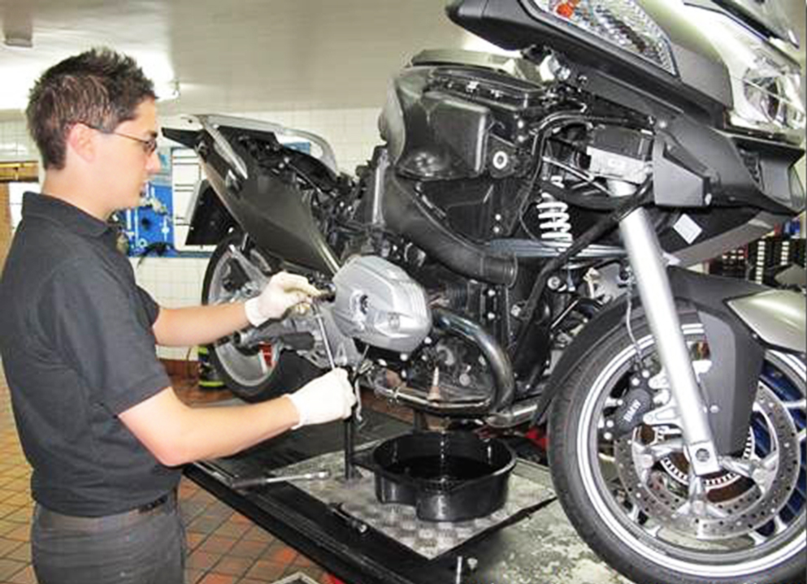

El Corazón De Tu Moto

¿Porque es importante el auto mantenimiento?
A diferencia de los automóviles,
cuando una moto no tiene los mantenimientos adecuados,
puede tener un accidente.
Es por eso que el mantenimiento de las motos es de suma importancia.
No importa la moto que conduzcas, importa la manera de vivirla...Tenemos un profundo respeto por el gusto de cada Motociclista, |